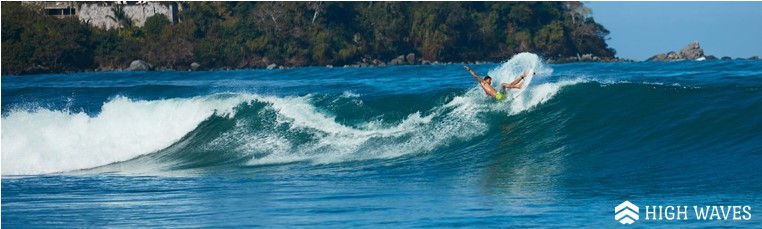

Mas de Nosotros...
|
Actividades deportivas y de relajación con las que contamos

Surfeo
Surfear es apasionante
La atracción que las olas causan en nosotros es fuerte. Sin haberlo probado y solo viéndolo en un vídeo u observando a surfistas en la playa, algo nos llama a disfrutarlo también. Deslizarse sobre las olas es una sensación extraordinaria, un placer en sí misma. Pero el Surf nos aporta además innumerables beneficios a todos los niveles.El surf nos pone en contacto con la naturaleza.
Este deporte se practica en el mar, sujeto a sus cambios de marea, clima, viento… Esto supone una relación entre deportista y medio natural que otras actividades practicadas en campos de deportes creados por el hombre no aportan.Fortalece el corazón
La práctica del surf beneficia el funcionamiento del corazón debido a la mejora del flujo sanguíneo, el buen estado de los lípidos sanguíneos y la presión arterial, fortaleciendo el sistema nervioso, relajándonos y ayudando a un bienestar también mental.Reduce el estrés
Concentrarse en surfear las olas consigue que desconectemos con todo lo exterior, que dejemos los problemas fuera del agua. Si lo has probado, sabes que al salir del agua después de una buena sesión sientes una sensación de tranquila euforia, de plenitud, de “tener el día hecho”. La descarga de adrenalina de una buena ola elimina tensiones y descansa nuestra mente de agobios diarios.Refuerzas tu musculatura
Practicando Surf refuerzas toda tu musculatura, sobre todo en la zona media del cuerpo, pues ahí se encuentran la mayor parte de los músculos que utilizas mientras maniobras sobre la tabla. Pero por supuesto también tus piernas, brazos y espalda se verán reforzados mientras remas y surfeas. El aumento de masa muscular y fuerza ayudará también a prevenir lesiones. |